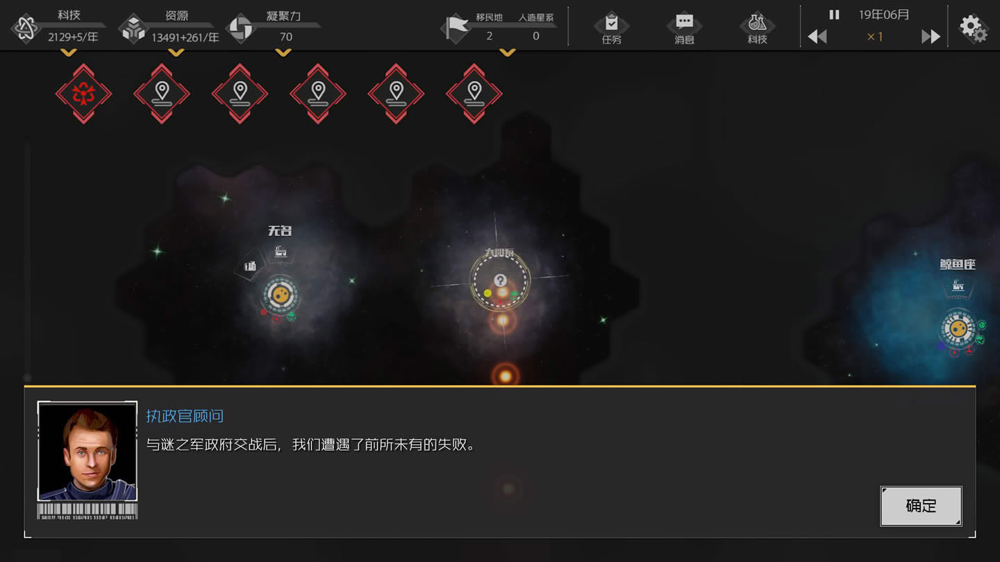
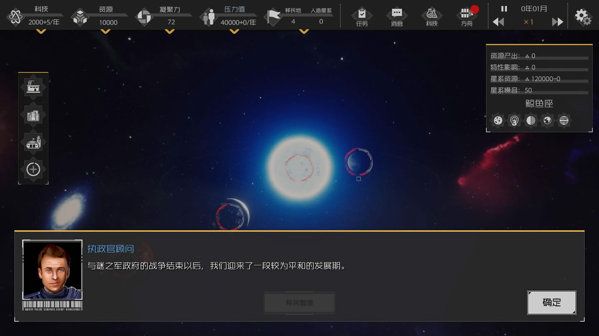
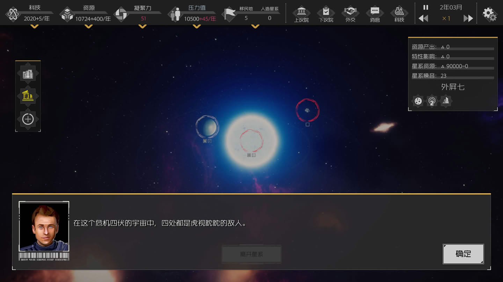
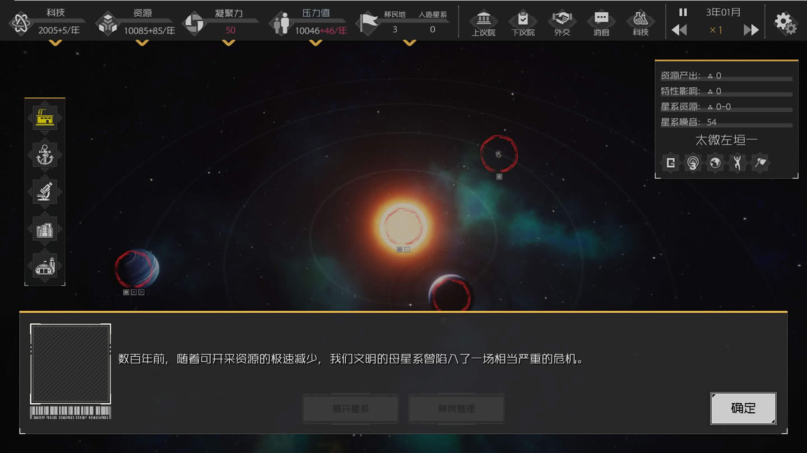
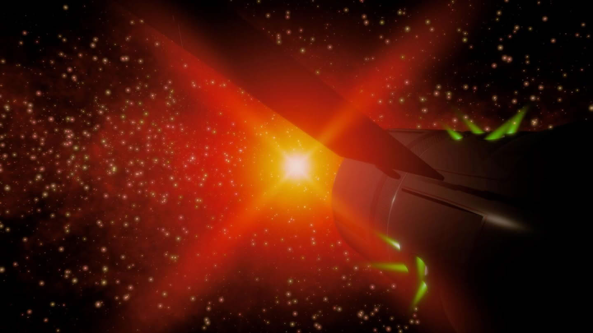

01. 首次接触
在无尽的岁月里, 生命极其偶然地出现在这颗渺小星球上一个不起眼的角落. 随着时光推进, 不断演化和灭绝; 最终, 在历经无数轮残酷的生存竞争之后, 我们这一物种脱颖而出, 在世间愈发壮大了;
—————
if(场景开端){ 执政官顾问: 第一台实用型聚变发动机的发明, 使得恒星际的航行成为了可能; 现在, 我们的文明已经正式升格为一个星际文明(解锁: 工厂建筑, 太空港建筑)(任务: 建造工厂×1, 建造太空港×1) };
if(建造了工厂和太空港){ 执政官顾问: 我们的母星系过于狭小, 资源很快就会耗尽. 是时候向着更广阔的天地迈出步伐了(解锁: 离开星系, 扫描操作, 移民地和人造星系属性) };
if(资源 < 1000){ 执政官顾问: 扫描需要消耗较多的资源, 我们现在的资源储备比较吃紧, 最好先别进行扫描 }else if(完成了扫描操作){ 执政官顾问: 在距离我们不远的位置, 我们发现了一颗新的星系; 我们需要对该星系进行探索, 来获取星系的信息(解锁: 星系行动, 包含[探索/交流/外交/整合/移民/攻击]) };
if(完成了星系探索操作){ 执政官顾问: 地外宜居行星的发现, 给长达数千年的争论划上了句号, 我们的星系并不是宇宙中唯一的摇篮; 接下来, 我们将扩展疆域(任务: 移民一个星系); 如果等待的时间过长, 可尝试加速; 再次点击可以减慢速度(注解: 减速/暂停/加速, 操作快捷键分别为 Z/X/C, 但在联机模式下仅主机可改变速度) };
—————
if(完成了移民操作){ 执政官顾问: 对于我们文明来说, 这是伟大的一天. 我们在距离故乡数亿公里之外, 建立了一个新的家园; 但新的殖民地只是开始, 我们仍需要继续扩张; 不过此时我们母星的资源已经耗尽, 我们要在尽快其他星系建立工厂(解锁: 科技属性)(任务: 积累 10000 资源); 我们可以通过科技来提高生产力(解锁: 科技界面)(解锁: "发展"科技类) };
if(积累10000资源){ 执政官顾问: 现在, 我们的资源储备十分充裕, 这就是我们探索星空的基础(奖励: 资源 +5000)(任务: 找到新的星系并探索); 科技就是第一生产力, 我们应该为此投入更多精力(解锁: 研究所建筑)(任务: 建造研究所×1) };
if(建造研究所×1){ 执政官顾问: 随着新的研究所落成, 我们文明的科研工作将能够更为顺利的开展(奖励: 科技 +500) };
—————
if(完成了移民操作){ 执政官顾问: 由于建立了新殖民地, 文明管理难度提高, 这导致我们文明的凝聚力有所下降; 凝聚力的高低会直接影响到我们的资源收入, 因此, 维持较高的凝聚力对我们的文明意义重大; 我们可以建立一个栖息地, 来提升文明凝聚力(解锁: 栖息地建筑)(任务: 建造栖息地×1)(注解: 凝聚力的下限为 5 但没有上限, 不过最大有效值为 100) };
if(建造了栖息地){ 执政官顾问: 新的栖息地带给了居民们更好的居住环境, 我们文明的凝聚力大大提高; 不过我们还可以通过其他手段来进一步提高我们的凝聚力(任务: 达到 90+ 凝聚力); 我们可以用【扩张】科技了(解锁: "扩张"科技类) };
if(凝聚力>=90){ 执政官顾问: 我们成功地提高了文明的凝聚力, 当前我们的人民空前的团结(奖励: 获得 500 科技点) };
—————
if(找到新的星系并探索){ 执政官顾问: 探索结果显示, 这个星系的噪音比自然情况下高出许多; 一般来说, 星系的噪音与文明活动, 恒星类型等因素相关, 高噪音通常意味着存在文明; 也许这里存在另一个智慧文明(任务: 交流高噪音星系) };
if(交流高噪音星系){ 执政官顾问: 我们收到了回复. 他们是一个已经步入工业时代, 但尚未涉足太空的"原始文明"(事件: 原始文明); 这对我们造成了巨大的冲击. 尽管他们的科技都还很原始, 但发展路线的巨大差异仍然使我们学到了新的知识; 或许, 我们可以尝试将这些尚未进入太空的文明整合进我们的疆域(任务: 整合一个原始文明); 也许宇宙中还存在着很多像这样尚未进入太空的文明; 如果我们暂时不着急整合他们, 那么选择与他们进行持续的科研交流, 或许能得到更多启发 };
if(整合文明){ 执政官顾问: 或许是认同我们辉煌的文化, 或许是屈服于我们先进的技术; 一段时间之后, 我们成功将这个原始文明所在的星系, 整合为我们的殖民地; 但是我们心中的疑问一直没有得到答案. 在宇宙漫长的历史中, 难道真的没有涌现出其他的太空文明吗; 这一切, 或许要等到我们探索更远的地方, 发现更多文明, 才能得出结论了; 提示: 现在可通过滚轮缩放星系界面(任务: 找到更多并交流文明); 宇宙过于空旷, 我们需要提升我们的搜寻效率(解锁: "探索"科技类) };
—————
if(找到更多并交流文明){ 执政官顾问: 种种情报都在向我们表明, 这也是一个尚未进入太空的原始文明(事件: 原始文明); 尽管未能发现其他的太空文明让我们感到疑惑, 但这并不妨碍我们继续拓展新的疆域(任务: 再次整合一个原始文明) };
if(整合原始文明失败){ 执政官顾问: 最新情报显示, 我们不仅没能成功整合新发现的"原始文明", 甚至失去了与它的联系(事件: 交流); 我们还没有弄清到底是什么状况, 便从那个我们所认为的"原始文明星系"收到了一段交流信号(事件: 建交); 在有限的交流中, 我们了解到对方似乎是一个军事政府. 情报显示它们其实是一个比我们更早进入太空时代的文明, 这一消息再一次冲击了我们的社会; 但他们似乎在竭力隐藏更多与他们相关的信息, 以至于在初次收到交流信号时, 便将殖民地伪装成了"原始文明"; 显然他们并不打算信任刚刚建立联系的文明, 或许与他们进一步交流, 能够打消他们对我们的怀疑吧(解锁: 外交界面)(任务: 与谜之军政府签订贸易协定)(注解: 每发现一个殖民地, 协议可 +10 凝聚力, 但上限为 +30) };
—————
 建立交流后, 我们仍存有诸多疑惑; 为什么他们一开始要伪装成原始文明? 为什么建立交流还要竭力隐藏自己的信息; 直到不久之后, 他们的舰队出现在了我们的母星周围, 压倒性的军事力量将我们所引以为傲的文明摧毁殆尽; 这时, 我们才明白, 漫天繁星, 缘何选择沉默… (任务完成: 弱小和无知并不是生存的障碍, 傲慢才是);
建立交流后, 我们仍存有诸多疑惑; 为什么他们一开始要伪装成原始文明? 为什么建立交流还要竭力隐藏自己的信息; 直到不久之后, 他们的舰队出现在了我们的母星周围, 压倒性的军事力量将我们所引以为傲的文明摧毁殆尽; 这时, 我们才明白, 漫天繁星, 缘何选择沉默… (任务完成: 弱小和无知并不是生存的障碍, 傲慢才是);
02. 背水一战

与谜之军政府交战后, 我们遭遇了前所未有的失败; 以我们目前的科技水平, 战胜他们显然是不可能的, 所以我们只能暂时撤退了!;—————
if(场景开端){ 执政官顾问: 虽然我们战败了, 但也并非毫无收获; 我们的科学家对这场惨烈的战斗进行分析, 得到的数据使得我们迎来了一次新的技术爆炸(事件: 殖民地毁灭) };
if(经过一年){ 执政官顾问: 战败之后, 我们撤离到了曾经的殖民地, 这里虽然勉强可以继续生存, 但目前还不能支持我们进行反击; 我们需要对星系的潜力进行开发, 以便积累更多的力量(解锁: 扩展槽位)(奖励: 资源 + 8000)(任务: 扩展星球槽位×2); 提示: 如果等待时间过长, 可尝试进行加速! };
if(扩展星球槽位×2){ 执政官顾问: 再一次, 我们收到了来自宇宙的交流信号(事件: 交流); 但民众并没有感到兴奋. 相反, 恐惧情绪开始弥漫; 如果信号来自谜之军政府怎么办? 或是另一个四处寻找猎物的高等文明又怎么办; 或许, 我们像谜之军政府那样, 也将殖民地伪装成原始文明, 至少能争取到一段时间; 但伪装被发现只是时间问题. 无论如何, 我们需要加紧准备了(解锁: 军事基地建筑)(任务: 建造军事基地×2) };
—————
if(建造了军事基地×2){ 执政官顾问: 最新情报显示, 谜之军政府正试图整合我们的殖民地, 很显然他们失败了; 好消息是, 至少在我们的伪装奏效的时间里, 敌人错把我们的殖民地认作原始文明; 坏消息是, 敌人看来已经识破了我们的伪装 };
if(收到敌人邮件){ 执政官顾问: 种种迹象表明, 敌人的舰队正在向我们的殖民地疾速地靠近; 如果不想让悲剧重演, 我们只能在受到攻击的星系进行征兵, 尝试殊死一搏; 征兵能在短时间内让殖民地防御能力将被提升至现有科技水平极限; 这是为了能生存下去而不得不启用的手段(解锁: 征兵操作)(注解: 征兵可让舰队规模在 60 年内翻倍, 但它有 100 年 CD) };
if(防御成功){ 执政官顾问: 很幸运, 背水一战, 勉强在敌方的进攻中存活了下来; 征兵这种极端战备状态的持续时间有限, 也需要相当长的时间进行恢复, 请谨慎使用; 需要注意, 如果舰队代差过大, 即使靠征兵也无力回天; 可用积累的科研点, 来提升我们舰队的战力水平(解锁: "军事"科技类)(任务: 提升舰队规模, 提升舰队闪避, 消灭敌人位于太阳系的殖民地); 在科学家不懈努力之下, 舰队的科技取得了相当程度的进步, 我们的科研热情也因此进一步高涨(奖励: 科技 +1000) };
—————
if(消灭迷之军政府位于太阳系的殖民地){ 执政官顾问: 我们成功击溃了占领我们家园的敌人. 接下来, 回到故土只是时间的问题而已; 现在, 我们的舰队科技更胜一筹, 这是一个难得的机会, 我们一定要抓住它; 是时候, 把侵略我们的敌人赶尽杀绝了(任务: 消灭掉迷之军政府位于唧筒座的殖民地) };
if(对迷之军政府位于唧筒座的殖民地发起攻击){ 执政官顾问: 我们距离他们的母星还有相当长的一段距离; 等我们的舰队慢悠悠地抵达, 他们或许早已发展出了更强的科技; 机会转瞬即逝, 因此, 我们可以尝试给舰队加速(解锁: 舰队折跃) };
if(舰队执行折跃){ 执政官顾问: 需要注意, 舰队折跃会暴露舰队坐标; 坐标信息可能让对手推测出舰队的行动轨迹, 甚至于暴露我们的星系位置, 所以我们最好谨慎使用"折跃" };
if(战败){ 执政官顾问: 看来我们的舰队仍然不比军政府先进, 也许我们应当试着继续提升舰队科技(奖励: 科技+600) };
—————
当我们的舰队抵达后, 预想中的激烈战斗并没发生; 取而代之的, 是一个更令我们匪夷所思的场景; 那个曾经不可一世的谜之军政府, 他们的首都和殖民地, 已经变得毫无生机; 根据考察结果, 我们发现该星系遭到了一种是我们难以想象的武器发起的攻击; 在他们眼里, 我们是虫子；而在那些高等文明的面前, 他们又是什么呢; 此刻, 我们眺望夜空, 那片明明繁星灿烂的森林, 却显得深邃黑暗, 看不见一颗火星; 黑, 真黑啊… (任务完成: 毁灭你, 与你何干);
03. 生存压力

与谜之军政府的战争结束以后, 我们迎来了一段较为平和的发展期; 在得知高等文明存在之后, 我们便收敛了向外扩张的脚步, 不再执着于开拓新的殖民地; 然而, 管理一个太空文明的难度, 实在是超乎我们原本的想象; 不断消耗的资源, 难以维持的凝聚力, 以及日益膨胀的压力, 不断从内部侵蚀着我们的文明(解锁: 压力属性);—————
if(场景开端){ 执政官顾问: 压力会随着敌人数量/时间流逝/殖民地数量而逐渐积累, 但我们可通过相应的方式来降低它们; 例如, 可以通过开发星球, 为殖民地提供更多的生存空间, 实现暂时转移压力(解锁: 开发操作)(任务: 开发星球×1) };
if(开发星球×1){ 执政官顾问: 不同类型的星球, 可开发次数和每次开发所需资源, 以及能够转移的压力都不尽相同; 一般来说, 越宜居的星球, 开发价值越高(奖励: 压力 -5000)(注解: 仅行星可被开发, 且开发所需资源和时间会逐次递增) };
—————
if(年份 >= 75){ 执政官顾问: 紧急情况! 我们的一个殖民地遭到了攻击, 据调查, 他们是谜之军政府的母星被我们毁灭前出发的一只舰队; 他们出发后不久便与母星失去了联系, 但他们没有放弃, 仍选择要和我们决一死战; 他们战斗的信念十分强烈, 加之我们被打得措手不及, 所以尽管我们的舰队比他们强, 但还是吃了败仗(注解: 对方使用了特殊科技"背水一战", 所以必定胜利); 但现在我们无暇顾及这次战争的具体情况, 因为有更大的问题摆在了我们的眼前; 由于经过了多次的开发, 这个殖民地承载了相当高的人口压力. 受到摧毁后, 大量难民开始涌向其他殖民地; 要么, 我们选择驱逐他们, 但这会消耗我们大量的资源; 要么, 我们也可以选择安置他们, 不过骤然膨胀的人口密度, 将带来相当程度的压力(事件: 逃难者) };
if(殖民地毁灭){ 执政官顾问: 此次难民危机事件引发了我们文明内部的变革思潮; 作为一个宇宙文明, 我们一定会在今后的发展中遇到更多危机; 如果不能妥善处理, 我们的文明必将在某次新的危机中被抹除; 所以我们迫切需要一些手段, 更有效地改善文明的压力状况(解锁: 上下议院界面); 那么, 希望我们的改革是有效的, 我们终将度过难关(解锁: 居住区建筑, 所有科技类); 提示: 现在新任务将显示在下议院系统右侧面板(任务: 存活超过 1000 年, 拥有 5 个或以上的殖民地) };
if(重新殖民了被毁灭的星系){ 执政官顾问: 我们重新殖民了被敌人毁灭的星系; 由于居民逃离, 星球又变回了可开发状态; 然而, 开发星球并不是种可持续的手段, 我们需要找到更有效的降压的方法; 提示: 建造居民区可有效降低压力增长 };
—————
if(压力 >= 50000){ 执政官顾问: 不出所料, 这一次的人口压力危机, 彻底点燃了我们文明内部长期所积累的矛盾和不满; 如果我们不能妥善处理, 那么一场内战的到来将不可避免; 因为对文明的发展感到强烈不满, 我们的半数殖民地选择了脱离; 虽然我们承受了相当的损失, 但另一方面, 不满者的脱离也缓解了文明内部的矛盾; 通过强硬的手段, 我们勉强维持住了文明现有的疆域; 尽管如此, 如果我们不能解决根本问题, 危机将再次降临到我们头上(注解: 如果你提前解锁了"星球快速开发"和"星球高效开发"的科技项, 然后同时在多个行星执行开发星球, 则可在短期内迅速降低压力, 以避免爆发内战) };
if(爆发内战导致分裂){ 执政官顾问: 在脱离管辖后, 我们失去了那些殖民地的联系; 无论之后要怎么处理它们, 重新建立交流都是必要的; 关于叛离我们文明的殖民地, 有些信息值得我们注意; 由于否定我们文明的一切发展成果, 他们甚至放弃了我们多年发展的科技; 因此从某种意义上讲, 他们已经退化成了"原始文明"; 这也就意味着, 我们仍然有机会通过"整合"的手段, 将他们再次纳入我们的管辖范围; 当然, 我们也可通过使用武力手段解决, 不过这也许会产生一些意料之外的后果(注解: 整合可保留星系原有建筑, 且自动拆除目标星系的障碍景观, 采用武力则可能破坏建筑, 障碍景观也会被保留) };
—————
 if(拥有五个或以上的殖民地 && 存活超过一千年){ 无数的飞船在一度沉寂的太空港重新集结; 废弃的军事基地传出引擎轰鸣的声音; 一切都在昭示着, 我们的文明走出了低谷, 再一次回到星系这张大棋盘上… (任务完成: 给岁月以文明, 而不是给文明以岁月) };
if(拥有五个或以上的殖民地 && 存活超过一千年){ 无数的飞船在一度沉寂的太空港重新集结; 废弃的军事基地传出引擎轰鸣的声音; 一切都在昭示着, 我们的文明走出了低谷, 再一次回到星系这张大棋盘上… (任务完成: 给岁月以文明, 而不是给文明以岁月) };
04. 战争艺术

在这个危机四伏的宇宙中, 四处都是虎视眈眈的敌人; 很多时候我们甚至都不知道敌人在哪里, 不知道他们是谁, 就遭遇了灭顶之灾; 如今, 在一轮又一轮的大灭绝之后, 我们面临着一个叫作宁静爆破者的武装组织, 它威胁着我们的文明(任务: 击败宁静爆破者);—————
if(移民地被摧毁){ 执政官顾问: 是宁静爆破者, 那群行迹莫测的幽灵进攻了我们; 他们的行动出其不意, 我们的守备舰队甚至未来得及反应便被尽数消灭; 但不知为何, 他们并没有占领打下的星系, 而是劫掠之后便扬长而去; 我们应该尝试占回那个移民地(任务: 夺回那个被侵略的星系)(注解: 你需要先执行探索, 确定了沦陷星系的状态之后, 才能派出移民船) };
if(夺回那个被侵略的星系){ 执政官顾问: 我们夺回了被劫掠的星系. 除了建筑物, 没有损失太多. 在对抗舰队实力更强的敌人时, 这种游击战术是我们的法宝; 但要实施这样的战术, 需要实时掌握对方的动向. 在空旷的宇宙中, 这是十分艰难的; 我们需要建造一个观测站, 来获取敌人动向; 右键点击空地(解锁: 人造星系)(任务: 在人造星系上建造传感阵列×1) };
if(在人造星系上建造传感阵列×1){ 执政官顾问: 很好. 我们处在一个迷雾重重的宇宙, 时空的巨大隔阂, 使我们无法掌握其他文明的动向, 这其实也是文明间相互猜忌的根本原因; 传感阵列是这个黑暗的宇宙中唯一的灯塔, 它可以帮助我们探测每个接近的访客; 遗憾的是, 传感阵列需要低干扰环境, 所以只能在人造星系上建造. 因此我们要合理规划观测站布局 };
—————
if(经过了 50 年){ 执政官顾问: 警报! 位于我们人造星系上的传感装置, 探测到了不明物体的接近, 相信它并不是为缔结友谊而来; 它朝着我们的人造星系冲来了; 命令那里的守备军加强戒备, 防御这次攻击(任务: 使用征兵进行一次防御) };
if(成功抵御攻击){ 执政官顾问: 做得好, 尽管我们无法直接看到敌人的身影, 但通过掌握动向, 也能及时做出应对; 他们的科技飞快进步, 我们和他们的科技代差越来越大. 舰队已无法取胜; 需要改变战术(任务: 使用质量弹摧毁一个星系) };
if(解锁了质量弹){ 执政官顾问: 质量弹是种战略毁灭性武器, 利用高度压缩的白矮星物质射击目标, 一旦击中, 目标便会坍缩为黑洞; 无论对方的舰队有多么强大, 都防御不了这种武器. 这种武器唯一的缺点是速度太慢, 只能以亚光速前进 };
—————
if(使用质量弹摧毁一个星系){ 执政官顾问: 好的, 我们扳回了一局; 但要小心, 我们可以用这样的武器, 敌人也可以 };
if(传感区域检测到不明物体){ 执政官顾问: 警报! 人造星系上的传感阵列又检测到有不明物体进入传感区域了; 之前他们派遣舰队进攻我们却失败了, 想必这一次应该是出动了质量弹; 但是无需慌张, 我们见招拆招(解锁: 能量防护罩操作) };
if(防护罩成功拦截不明物体){ 执政官顾问: 我们在每个星系都储存了大量油膜物质. 释放这些油膜物质后, 当大质量物体靠近星系, 动量的急剧释放便会使侵入物解体; 这些物质不会影响舰队, 只能用来防御质量弹等大质量武器; 释放这些物质需要漫长的时间准备, 因此需要谨慎; 你已学会了基本的作战方法, 是时候歼灭宁静爆破者了(奖励: 科技点 + 10000) };
—————
 if(攻占或摧毁宁静爆破者在这个星域的所有殖民地 && 彻底消灭这个威胁我方文明的敌人){ 任务完成: 前进! 不择手段的前进! };
if(攻占或摧毁宁静爆破者在这个星域的所有殖民地 && 彻底消灭这个威胁我方文明的敌人){ 任务完成: 前进! 不择手段的前进! };
05. 闪烁星空

数百年前, 随着可开采资源的极速减少, 我们文明的母星系曾陷入了一场相当严重的危机; 幸运的是, 在资源耗尽之前, 我们发现了这片尚未孕育出文明的星区; 对这片星区的殖民和开采成功, 帮助我们度过了难关, 并得以延续至今; 尽管资源危机暂时得到了缓解, 但从长远考虑, 我们仍希望可以为文明一劳永逸地解决资源问题;—————
if(场景开端){ 科学家: 一个星系的可开采资源终究是极为有限的, 我们有必要找到更高效的能源利用方式; 对于一个恒星系统而言, 仅有极少数由恒星辐射出的能量, 被其行星所接收, 成为了可开采的资源; 如果可以建造一座恒星级的开采工程, 持续截获恒星辐射出去的能量; 或许在很长一段时间内, 我们就再也不用担心资源的问题了(任务: 建造戴森球×1)(注解: 戴森球在不同恒星的收益是不同的, 范围介于 50~250) };
if(建造戴森球×1){ 旁白: 当戴森球竣工的消息传遍我们的星区, 整个文明为之欢呼, 大家纷纷庆贺着一个崭新时代的到来; 这实在是一项难以想象的工程奇观; 庞大的巨构建筑, 在宏观的尺度下诠释着"遮天蔽日"的这一概念; 这不单是我们科技的成就, 也同时意味着资源自由的时代来临, 但是在欢乐的海潮之下, 却有疑虑, 担心, 乃至于恐惧的暗流正在涌动着 };
宇宙社会学家: 宇宙中有数以万亿计的星系, 每个星系也有数以万计的恒星和行星系统, 其中会孕育多少文明; 而这些文明中, 有多少还尚未迈向宇宙, 又有多少已成为了物理法则下的"神明"; 当那些高等文明看到我们, 祂们会为文明的进步感到欢欣吗; 还是说把我们的坐标, 记录到"待清理"的名单上;
旁白: 星系的基础噪音是由星系内的天体所决定的, 不同天体(恒星/行星/黑洞/残骸/人造星系)的基础噪音不同; 星系中的建筑也会为星系增加噪音, 而不同建筑带来的噪音大小也各不相同; 且相比起普通的建筑, 巨构建筑带来的噪音还会更高;
宇宙社会学家: 一个星系越是繁荣, 其噪音相对来说也就会更高; 而这会不会也同时意味着, 它是一个更有价值的清理目标; 希望我们的理论是错的, 但是现在, 让我们静观其变吧;
—————
if(年份 >= 100Y){ 执政官顾问: 执政官阁下, 这是国防部向我们呈递的报告. 他们检测到在星区的这片区域, 展开了一片不寻常的尘埃; 当舰队或质量弹等物体经过尘埃区域, 会拖出一条明显的航行轨迹, 因而暴露它们的位置; 国防部也曾进行过类似实验, 因为数据相似, 他们判断这片尘埃区域应是某个文明所制造; 至于他们是谁, 出于什么目的, 则暂且不得而知; 经过测算, 国防部建议派出舰队对指定区域进行巡逻, 以获取更多信息(解锁: 军事命令操作)(任务: 进行舰队巡逻) };
if(进行舰队巡逻){ 执政官顾问: 与尘埃区域类似, 舰队巡逻也会向我们报告区域内的实体; 但不同的是, 我们忠实的舰队只会向我们报告所得的信息; 而尘埃区域会将所有经过的实体暴露给所有的文明; 请根据需求, 选择最合适的侦察手段 };
if(经过了 50 年){ 执政官顾问: 国防部又发来了新的报告; 自那片不寻常的尘埃区域展开后, 国防部一直密切监视其中的动向; 而现在, 我们发现有不明来源的威胁实体在这片区域中划出了明显的轨迹; 虽然经过研判, 国防部认为造成这些轨迹的实体并非以我们为目标; 但这仍然说明, 至少有两个及以上的文明在这片星区附近交战; 这为政府带来了一系列争论 };
政府官员: 这是场战争与我们无关; 我们甚至不知道战争持续时间, 参战方数量和科技水平; 没有任何理由掺和这趟混水;
军方高层: 您不知道一场在可观测范围内的宇宙战争对我们来说意味着什么; 无论哪方获胜, 胜利者在享用完他的果实之后, 下一个目标只会是我们; 如果我们现在不主动干涉这场战争, 等战争向我们走来才临阵磨枪, 就来不及了(事件: 争论);
—————
if(选择介入战争){ 军方高层: 经过研判, 我们认为这个星系存在一个前哨基地, 可试探攻击(可选任务: 攻击星宿一) };
if(攻陷目标星系){ 执政官顾问: 执政官阁下, 紧急情况! 我们一个星系坐标遭到了广播, 我们破译了广播的具体信息 };
广播信号: 通过广播传达给任何向我们发动过侵略的文明; 猎手不会怜悯我们, 但他会瞄准你们; 现在, 你们也是猎物了…
—————
if(年份 >= 200Y){ 执政官顾问: 执政官阁下, 我们收到了一条广播信号, 这似乎是一次全域广播; 广播的信息包含了星区中的一个坐标位置, 我们发现那里的确存在一个星系; 由于全域广播的功率过于巨大, 广播发起星系的坐标也同样暴露 };
执政官: 这段信息意味着什么? 为什么要进行这样的广播?
军方高层: 我们曾对暴露在尘埃区域的不明实体进行过推算, 得到了一个出发位置; 而该位置与被广播的位置距离相当近;
政府官员: 我们假定处于该星区的, 是一个处于扩张中的宇宙文明; 那么, 这么近的距离, 几乎可以确定是, 被广播的那个星系和之前发动攻击的星系, 属于同一个文明的管辖范围;
执政官顾问: 探索结果的报告已经完成同步; 我们发现目标星系的噪音相当高, 这与该星系的自然状态完全不符; 所以我们初步判定这里是一个文明的殖民地, 并且发展程度相当高; 但我们依然不清楚发出攻击和遭受广播, 二者究竟有什么关系;
—————
if(二维空间展开){ 执政官顾问: 执政官阁下, 有一个紧急情况需要立刻向您汇报; 我们一直密切监视着之前被广播的坐标区域. 而现在那里的星系已然不复存在, 一片二维空间已经展开; 我们尚未探明其具体的来源, 不过可以肯定的是, 这并不符合我们所掌握的任何物理规律; 如果这并非是自然形成, 那么这片二维空间的创造者一定掌握着我们无法想象的科技 };
宇宙社会学家: 这就是先前我们尚未理解的广播意义; 一个星系的坐标被广播向了全宇宙, 好似深暗森林中某处燃起的火星; 无法判断是敌是友; 那么总会有隐藏的猎人向那里开枪;
执政官: 也就是说, 暴露坐标的星系被高等文明给清理了?
宇宙社会学家: 是的, 而且被广播的星系和发出广播的星系, 它们的不同遭遇印证了我们的理论; 我们推测, 星系的暴露率将影响它被广播时受到打击的强度; 那个被二维空间所毁灭的星系, 或许曾经相当繁荣; 他们文明在发展时, 为星系带来了相当高的"噪音"; 而噪音带来的暴露率已超过某个阈值, 所以"猎手"认为, 已经有必要将这附近的整个星区都赶尽杀绝了;
执政官: 所以, 暴露率越高后果越严重?
宇宙社会学家: 按照我们已观察到的具体表现, 恐怕是的;
执政官: 一个被广播的星系, 暴露率越高, 所遭遇的打击就会越为"彻底"?
宇宙社会学家: 是的, 我们已根据相关的观测结果, 推算出了相应的规律(解锁: 噪音系统);
执政官: 看来我们不能再这样, 毫无顾忌地管理星球了, 我们得做点什么;
旁白: 建筑噪音会为星球带来等量的暴露率; 发出广播与被广播的星系均会增加额外暴露率;
科学家: 可通过建造屏蔽设施, 配合相应科技, 降低星系中特定建筑的噪音值(可选任务: 建造屏蔽装置×1);
执政官顾问: 这片二维化区域还将不断地展开, 很快就会波及到我们了; 事态紧急, 我们的文明需要采取一切手段生存下去; 执政官阁下, 请引导我们(任务: 存活超过 1500 年)(注解: 在主星团边缘建人造星系, 就能够尽可能拖延灭绝的到来);
—————
if(年份 >= 350Y){ 执政官顾问: 执政官阁下, 我方通讯渠道遭到了不明势力的强制访问 };
银河帝国: 阁下, 关于入侵通讯一事, 我们无意冒犯, 只是希望您可以考虑我们的诉求; 如您所见, 二维化区域在不可逆地不断展开, 我们所在的星区正在面临着共同的危机; 希望我们可以达成合作, 或许我们双方都能够成功逃离天灾; 为表诚意, 我们可以向你们提供技术支持; 由于时间紧迫, 希望你们可以尽快地做出决定; 通讯切断;
执政官: 在座的各位, 你们对这个银河帝国, 有什么看法?
军方高层: 这个文明不值得信任; 或许正是他们对其他文明发动战争, 才导致了广播和天灾; 不能指望他们会因为天灾而变得道德高尚 ———— 这只会让他们更疯狂; 答应与他们合作, 就是与虎谋皮;
政府官员: 我们赞同关于"不该信任他们"的部分; 但种种迹象表明, 他们的发展水平高于我们; 因此, 现在就撕破脸皮并非最好的选择; 我们应该答应他们的合作请求, 至少能从他们的技术中获得进步(事件: 合作);
if(拒绝合作){ 银河帝国: 你们没有明白, 这是一份要求, 而不是请求; 你们终究会明白的; 通讯切断 }else if(答应合作){ 银河帝国: 很好, 你们做出了正确的选择; 这片星区的文明都会感谢你们为和平做出的贡献; 通讯切断 };
军方高层: 看来他们并非故事中那种不会隐藏秘密的文明;
政府官员: 这么拙劣的谎言, 或许他们也只是刚学会隐瞒而已, 也说不定?
执政官: 无论如何我们都需要做些准备; 对方比我们强, 我们需要更为强而有力的破局手段;
执政官顾问: 执政官阁下, 关于商量对策, 您要找的人, 都已经安排好了;
执政官: "将广播改造为一种战略打击手段", 可行性如何?
宇宙社会学家: 从理论来说, 是可行的;
科学家: 从实际出发, 我们也已经见证了广播产生的效果;
宇宙社会学家: 要将广播作为打击的手段, 首先需要足够强的信号发射源;
科学家: 以我们目前的科技水平, 我们可以借助恒星来进行信号的放大, 或许可以满足需求;
宇宙社会学家: 作为一项战略工程, 我们的广播设施应该也是足够稳定的;
科学家: 我们可以在恒星轨道上架设永久的发射天线工程;
宇宙社会学家: 光有天线或许不够, 还需为这项武器提供更多的算力, 以求更为精确的控制;
执政官: 这可以靠我们的星系军事基地技术进行算力支持;
科学家: 此外还要注意, 如此大功率的进行广播攻击, 一定会同时暴露发起攻击的星系; 这些星系也同样有可能遭到打击;
执政官顾问: "天灾"将不可逆的展开, 并毁灭一切沿途的星系; 我们别无选择, 只能尽力向其尚未扩张到的区域进行逃离;
军方高层: 星区的所有文明都和我们挤在同一条独木桥; 生存空间不断被压缩, 为了逃离, 文明间的矛盾只会越来越激烈;
政府官员: 除了天灾, 还应当考虑其他文明带来的威胁; 如果他们执意要成为我们逃离的阻碍, 那消灭他们也是必要选择;
执政官顾问: 执政官阁下, 接下来我们文明需要您敏锐的判断(任务: 建设广播站×1, 进行广播攻击×1, 消灭"银河帝国");
—————
这片星区的喧嚣并未持续太久; 二维化区域不断展开, 越来越多的文明坍缩到宇宙的画卷之中; 我们很幸运, 即使曾经的辉煌被毁灭, 我们依然保留了文明的火种; 在低维空间尚未到来的区域暂时喘息; 但二维化的进程不可逆转, 逃亡还将继续; 尽管我们无从知晓文明将何去何从; 但我们永远铭记这宇宙规律下的生存法则 ———— 熄灭火种, 藏好自己… (任务完成: 我需要一块二向箔, 清理用);
06. 远航方舟
数百年前, 我们家园附近出现了不断扩大的低维空间, 先辈只得开始漫长的逃亡, 最终在此安身; 当我们的文明休养生息之时, 低维区域的扩张一刻未停, 如今它再次逼近了我们的栖身之地; 执政官阁下, 我们的安稳时日所剩无多, 需早做打算; 我们可在人造星系上建造观测站监看危险(解锁: 观测站建筑)(任务: 保持压力不超过上限/在 2500 年前完成逃离任务/在人造星系上建造观测站×1);
—————
if(低维空间出现但观察站还未被建造){ 执政官秘书: 低维空间已经出现了, 我们不必再建观测站了 }else if(在低维空间出现前建造了观测站){ 执政官秘书: 观测站监测到, 低维空间逼近了我们的星域外围, 我们不再安全; 不能再像前人那样, 使用移民船队姑且逃到相邻的星系了. 因为那样处理的话, 我们的文明还来不及恢复元气, 很快又要面临低维化的魔爪 };
科学家: 我有个建议; 我们应该建设一艘方舟, 一艘能远距离航行的方舟, 载着我们到足够遥远的地方安家; 这样能为我们的后代争取一段较长的时间, 让他们能专心寻找破解低维扩张的方法(任务: 建造方舟船坞);
if(建造方舟船坞){ 科学家: 方舟船坞已准备好了; 接下来我们需要造一艘真正的方舟, 带领我们的文明逃离这个动荡之地(解锁: 方舟界面)(任务: 建造方舟并且带领文明逃亡) };
科学家: 这里就是建造方舟的面板; 在方舟建造完成后, 点击这里, 我们就可以开启逃亡了;
if(经过了五十年){ 执政官秘书: 方舟开始建造的消息已传遍了整个文明; 我们尚未公布船票分配的规则, 社会上人心惶惶(事件: 船票)(事件: 担忧扩散)(注解: 如果选择选择最远航行距离, 就不能让所有人都上船, 那样方舟将会无法起航) };
—————
if(方舟龙骨升级){ 科学家: 根据我们的研讨, 目前有几个目的地可选择; 1.离我们最近的甲星团, 距我们大约 1000 光年. 不过我们在那里恐怕呆不了多久, 因为二维空间很快就会追上来; 2.离我们稍远的乙星团, 距我们大约 3000 光年. 二维空间要过数千年才能扩张到那里; 但我们并不确定那里是否有不友好的文明, 以及我们的方舟能否撑得了那么长距离的旅途; 3.最后, 有个 5000 光年外的目的地. 根据研究, 由于宇宙正在膨胀, 所以数万年内二维空间都蔓延不到那里; 但我相当怀疑, 我们能否在低维到来之前, 准备好如此遥远的航行, 以及我们是否有足够的幸运能顺利抵达那里(事件: 远航的尽头)(注解: 如果你选择了最远的航行距离, 并且成功起航, 则可选任务中, 中距离和近距离的两个任务, 也会被自动完成) };
if(经过一段时间){ 执政官秘书: 越来越多的民众预感自己很可能上不了方舟了, 现在整个文明处在动乱的边缘; 大家希望至少自己的孩子和家中的老人可以得到妥善的安置; 我们要怎么做(事件: 保护弱势群体) };
if(经过一段时间){ 执政官秘书: 二维空间的扩散给临近星系的居民造成了极大的恐慌, 他们相信若不采取行动, 自己会是第一批遇难者; 当地首脑不听我们指挥, 要求带着他们星系的许多居民抢先登上方舟(事件: 恐慌的蔓延) };
if(经过一段时间){ 执政官秘书: 执政官阁下, 有一个移民地被二维空间毁灭了, 当地无人生还. 在事发星系里, 其他移民地的民众惊惧万分, 哀鸿遍野; 人们正乘着私人飞船, 乱蜂一般地朝着方舟涌来, 我们应该怎么做(事件: 恐慌的爆发) };
—————
if(经过一段时间){ 科学家: 执政官阁下, 我为文明寻找出路, 殚精竭虑, 这些付出想必您都看在眼里了吧? 所以, 您会给我们登船资格吗? 我是说, 我和我的家族(事件: 后门) };
if(拒绝给科学家开后门){ 科学家: 既然你这样决定, 那我也不会继续再帮你隐瞒真相了 };
if(经过一段时间){ 执政官秘书: 我一直是您的得力助手, 您不会弃我于不顾吧? 我能带些人上船, 对吧(事件: 后门) };
if(拒绝给执政官秘书开后门){ 执政官秘书: 我辅助你工作这么久了, 你竟然如此无情! 这样的话, 我会让大家知道, 方舟建造的真实进度, 可并不像你一直宣称的那样乐观可控 };
if(经过一段时间){ 执政官秘书: 民众认为方舟工程的进度太慢, 需要加快进度(事件: 加快进度)(注解: 就算你给[科学家/执政官秘书]开后门, 这个负面的事件也还是会触发, 但考虑到开后门增加的人口也仅为 500 ×2, 所以其实无关紧要) };
执政官秘书: 执政官大人, 恐怕有麻烦了;
执政官秘书: 太多人提前上船, 人多口杂, 消息不胫而走;
执政官秘书: 公众知道区别对待. 您隐瞒方舟进度的事情也被披露于公众;
—————
if(经过一段时间){ 执政官秘书: 执政官大人, 我们突然收到了一条来自陌生频率的通讯 };
太空海盗: 我们是太空海盗, 我们对你们在做什么不感兴趣; 由于文明接连灭亡, 我们收益也不好; 我们知道你们移民地的坐标. 拿钱来吧. 和平无价不是吗? (事件: 海盗的勒索);
if(选择"我们不会向强盗妥协"){ 太空海盗: 你现在是无所畏惧, 但是你很快便会后悔的 };
执政官秘书: 我们拒绝了他们的勒索, 必须更加小心才是(注解: 每次拒绝, 对方就会对我方的多个殖民地发动一波攻击);
—————
if(超过 2500 年还未出发){ 执政官秘书: 低维空间已扩张至逃离极限, 我们的方舟无法在低维空间到达之前完成加速过程; 这是我们最后的启航机会了; 但很遗憾, 我们已经失去了最后的逃离机会(任务失败) }else if(方舟起航){ 执政官秘书: 随着最后一个反应堆高速回转起来, 方舟所有喷口都燃起了明焰; 伴随着众人的忐忑, 方舟终于冲破了它的摇篮, 向着未知的远方飞去; 而位于我们身后的, 是无数人曾栖息于其上的家园, 现在, 它们正在二维化的平面里不断跌落, 不断展开… };
if(在船票事件里选择"每个人都会有个家"){ 执政官秘书: 我们曾许诺, 每个人都会有个家, 我们一起离开这个被诅咒之地; 我们确实做到了, 我们一起离开; 但方舟上的人太多, 在这个牢笼般的孤岛上, 我们究竟何时会为了生存权再次大打出手? }else if(在船票事件里选择"能带多少算多少吧"){ 执政官秘书: 我们早就知道, 不是每个人都能逃离这个地狱; 当我们离开时, 被留下的那些人, 眼中是遗憾, 还是恨意? }else if(在船票事件里选择"我们只能保留文明的火种"){ 执政官秘书: 方舟上的人太多了, 生存资源捉襟见肘. 而当我们的食物即将耗尽时, 被淘汰或抛弃的会是你或者我吗? 尽管无奈, 但是我们很早就下定了决心, 只带走少数的一批人; 他们无疑是幸运的, 是文明的种子. 可是剩下的人呢? 他们绝望的最后时刻, 将永远是我们文明的伤痛; 我们选择只让精英上船, 大多数同胞被留在了原地, 静静等待死亡的降临. 而方舟系统则像走钢丝般维持着平衡, 人们在有限的生存空间内彼此猜忌. 如果出了意外, 下次, 我们又会以何方式剔除船上多余的人呢 };
—————
执政官秘书: 弱势群体对我们文明的存续, 作用相当有限;
if(保护弱势群体事件选择"让他们上船吧"或者"就地保护他们"){ 执政官秘书: 但是, 我们依然竭尽所能保护了他们. 关怀, 而非冰冷的计算, 是一个文明精神的未来 }else if(选择"我们正在努力"){ 执政官秘书: 因此, 我们选择了抛弃他们 };
执政官秘书: 危机逼近, 我们的敌人想要和我们一起逃走;
if(拒绝敌人上船){ 执政官秘书: 也许是因为方舟资源有限, 也许是因为仇恨难以消弭, 我们拒绝了他们的请求, 留他们在这里自生自灭 }else if(允许敌人上船){ 执政官秘书: 我们最终还是放下了仇恨, 尝试着团结一切力量, 共同面对危险 };
执政官秘书: 不安, 恐惧, 焦躁的情绪在整个文明中蔓延;
if(在恐慌事件中禁止更多人上船){ 执政官秘书: 或许是迫于无奈, 或许是疲于奔命, 或许是能力不足, 为了平息恐慌情绪, 我们不得不对同胞扣下扳机 }else if(在恐慌事件中允许更多人上船){ 执政官秘书: 尽管如此, 我们还是想办法解决 };
执政官秘书: 在这个过程之中, 我们也面临了诸多的抉择;
if(在加快进度的事件选择谎称){ 执政官秘书: 为了平息愤怒, 我们撒谎, 用虚幻的未来给了他们希望; 然而, 纸是包不住火的; 当谎言无法再隐瞒, 我们只好用强硬的枪口让人们沉默; 我们逃走了, 逃得远远的, 逃脱了危机, 还有我们的责任;
—————
if(远航的尽头事件中选择尽可能的走远点){ 执政官秘书: 我们希望逃得越远越好, 让低维空间的扩散赶不上, 只有这样子, 我们的文明才有未来; 我们做到了. 尽管经历了那么多艰难险阻, 但我们依然做到了; 然而, 我们的计算出了差错, 我们的燃料根本坚持不到那里. 恐怕我们只能沿途寻找驻足之地 }else if(远航的尽头事件中选择中等距离星团){ 执政官秘书: 我们选择到达较远的星团, 二维空间需要很久才会扩散到那里, 我们应该有足够的时间来重建家园; 但是那里就真的安全吗? 是否存在别的文明和我们争抢生存空间… 我们的计算出了差错, 我们的燃料根本坚持不到那里. 恐怕我们只能驶到更近的星系了, 我们未来将继续笼罩在低维空间的阴影之中… }else if(远航的尽头事件中选择到最近的星团){ 执政官秘书: 我们选择去往最近的星团, 二维空间很快就会侵袭那里, 但至少我们有苟延残喘的时间; 但之后呢, 我们要再建造一艘新的方舟, 继续逃吗; 可我们的计算出了差错, 我们的燃料根本坚持不到那里. 中途根本没有喘息之地, 恐怕我们将葬身于太空 };
—————

如今, 方舟的尾焰翻腾着, 滴落在二维平面上, 泛起了令人目眩的低维化涟漪; 未来数百上千年的时光还十分的漫长. 我们已经启航, 前途渺茫, 向着未知的远方… (任务完成: 傻孩子们, 快跑啊!);